Monday, November 16, 2026
Doom Was Always the Plan: Kang Was Never the Big Bad

Nathan has a theory, and he is bringing it on the stream tonight. Ever since Avengers: Endgame, he thinks Marvel Studios has been walking toward one villain: Doctor Doom. Kang got the posters. Kang got a movie. In Nathan's telling, Kang was never the big bad.
The public record is not a secret memo, and this page will not pretend it is. In July 2022 Marvel announced Avengers: The Kang Dynasty, with Jonathan Majors as Kang, to close the Multiverse Saga. In December 2023 Marvel fired Majors. In July 2024, at San Diego Comic-Con, Robert Downey Jr. was announced as Doctor Doom, the Russo brothers came back to direct, and The Kang Dynasty became Avengers: Doomsday. What follows is that saga in release order. Dates, plots, and casting are the facts. Every time a paragraph turns and says this was really about Doom, or about incursions, that part is Nathan's theory.
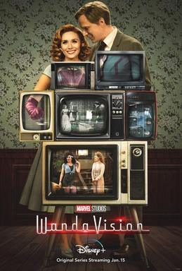
WandaVision premiered on January 15, 2021, the first Marvel Studios series on Disney+. Wanda Maximoff seals the town of Westview inside the Hex, a sitcom with a different decade every week, and holds Vision, the neighbors, and the twins Billy and Tommy inside it. Agatha Harkness drops the act, a second Vision wakes up white, and the last image is Wanda, somewhere far from town, reading the Darkhold. Kang is not in the show. Nathan's read: the Hex is the saga practicing an incursion, one will rewriting a place until the edges tear, which is the trick he thinks they were saving for Doom.
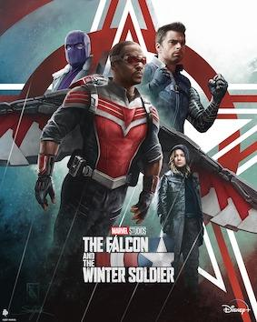
The series premiered on March 19, 2021. Sam Wilson has to decide what a man does with Captain America's shield, Bucky Barnes is trying to live past the Winter Soldier, and the Flag Smashers treat the Blip as a wound the world papered over. Isaiah Bradley's erased service sits under the official story, John Walker breaks while holding the shield, and the post-credits scene has Contessa Valentina Allegra de Fontaine recruit him. Nathan's read: this is a story about who is allowed to rule after half the world came back. Doom is a king before he is a sorcerer. Kang never clocks in.

Season 1 premiered on June 9, 2021. The Loki who slipped away with the Tesseract in Endgame is arrested by the Time Variance Authority and shown a Sacred Timeline that gets pruned when it branches. At the Citadel at the End of Time, he and Sylvie meet He Who Remains, played by Jonathan Majors, who says variants of himself fought a multiversal war and that he built the TVA to stop another one. Sylvie kills him. The branches explode. Nathan's read: the facts on screen are a Kang variant and a warning about a war of selves. The picture he thinks Marvel kept was the man on the throne at the end of time, because that is the chair Doom takes when the comics run out of universes.
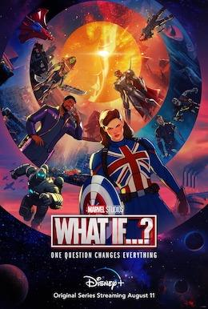
The animated anthology premiered on August 11, 2021, and later seasons kept going. The Watcher narrates branches that were not allowed to stand: in the first season, Doctor Strange Supreme tries to undo a single death and unravels his universe, and another story hands Ultron the Infinity Stones. Nathan's read: a sorcerer who destroys a world by insisting on a rewrite is the incursion story without a conqueror in the title. These are worlds that can die. That, he thinks, is the board Secret Wars is built to flip.

The film opened on September 3, 2021. Shang-Chi is pulled back to his father, Xu Wenwu, and the Ten Rings, and the last act steps through a gate into Ta Lo. A post-credits scene has Wong bring in Carol Danvers and Bruce Banner to look at the rings, which are sending a signal none of them can place. Nathan's read: the rings are older than the TVA's paperwork, a relic calling outward, and the saga keeps planting objects that do not belong to Kang's war. A ruler who will burn down his house to open a door is, in Nathan's book, practice for Latveria.
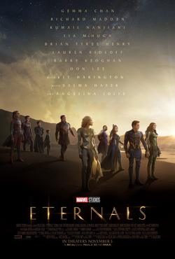
Eternals opened on November 5, 2021. The immortals learn that Earth is an egg, and the Emergence of the Celestial Tiamut will crack the planet open. They split. Sersi stops the birth. The post-credits scenes tease Eros, Dane Whitman with the Ebony Blade, and Blade. Nathan's read: a world spent as raw material, judged by something enormous, is incursion-scale cosmology. Kang is not the threat. The threat is a universe that can be used up.
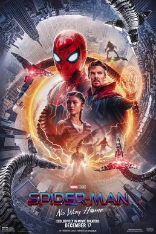
The film opened on December 17, 2021. Peter Parker asks Doctor Strange for a spell so the world will forget he is Spider-Man. The spell breaks, and villains, then other Peters, step onto the same New York pavement from other universes. Nathan's read: Strange says the working is tearing reality, which is how an incursion begins in the comics Nathan has in mind, two universes touching until one of them has to give. No Kang. A botched prayer of a spell, if you want it in church language, and a very expensive lesson about being specific.

The film opened on May 6, 2022. America Chavez opens doors between universes whether she wants to or not, and Wanda, carrying the Darkhold, dreamwalks after her sons and cuts down the Illuminati of Earth-838, including that world's Reed Richards. The film finally says the word. In the mid-credits scene, Charlize Theron's Clea tells Strange that his hopping has caused an incursion, and she cuts a door into the street. Nathan's read: this is where his theory stops being a mood. Incursions, an Illuminati, and a Reed Richards, years before the Fantastic Four had their own film, and Kang is still not the one in the villain's chair.

The series premiered on June 8, 2022. Kamala Khan puts on a bangle from her great-grandmother and opens a way toward the Noor dimension, while the Clandestines try to force that door wider. Her friend Bruno finds a mutation in her DNA. A tag at the end swaps her place with Carol Danvers, which is the doorway into The Marvels. Nathan's read: another universe leaking into Jersey City through an heirloom, not through a time tyrant. A small incursion you can wear on your wrist.
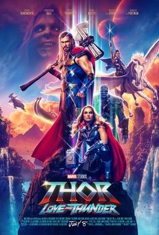
The film opened on July 8, 2022. Gorr the God Butcher, with the Necrosword, is killing gods. Jane Foster picks up Mjolnir and becomes the Mighty Thor. The story ends at Eternity, where Gorr's wish brings his daughter, Love, back, and Thor raises her. Zeus is busy being unimpressed in Omnipotence City. Nathan's read: the question on the table is who gets to be a god, and Kang is not in the conversation. A cosmos with a wish at the center is the sort of board a god-emperor would covet.
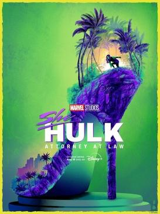
The series premiered on August 18, 2022. Jennifer Walters practices law, hulks out when the case requires it, and shares a few episodes with Daredevil. The finale walks through the fourth wall into a writers' room, where she argues with K.E.V.I.N., a robot stand-in for the studio's story machine, and gets the ending changed. Nathan's read, and he knows this one starts as a joke: the show admits a story can be grabbed and rewritten by whoever holds the keyboard. That is the comedy sketch of the throne he thinks Doom is walking toward.
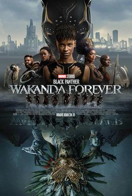
The film opened on November 11, 2022. It mourns T'Challa, after Chadwick Boseman's death, and Shuri has to decide what kind of Black Panther she will be while Namor and Talokan come up from the water ready to flood the surface. Riri Williams builds a suit in the middle of all that, which is the seed of Ironheart. A mid-credits scene introduces T'Challa's son, Toussaint. Nathan's read: Namor is a king who believes his people live only if he sets the terms of contact. A hidden nation and a monarch is Doom's political shape. Kang is not in the water.
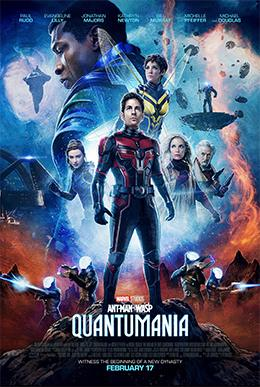
This is the Kang movie. It opened on February 17, 2023. Scott Lang, Cassie, Hope, and Janet van Dyne fall into the Quantum Realm and meet Kang the Conqueror, played by Jonathan Majors, exiled there by other versions of himself after a multiversal war. MODOK is Darren Cross, which is a grim joke, and a post-credits scene fills an arena with Kang variants. Nathan's read: this is the one chapter that actually sits Kang in the big chair, and he thinks it is the outlier. A council of rivals is not the same story as one will editing reality, which is the story he hears in the rest of the saga.
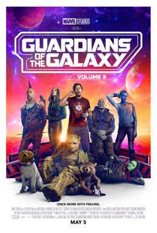
The film opened on May 5, 2023, and it is Rocket's origin. The High Evolutionary built him, killed his friends when they were no longer useful, and keeps a Counter-Earth as a rough draft he is willing to throw away. Adam Warlock crashes the party, the team breaks the machine, and Peter Quill goes home to Earth. Nathan's read: a scientist who thinks he may design worlds and bin them is the incursion saga's other face. Doom is a scientist-king. The Evolutionary is the cautionary mirror. Kang does not get a scene.

The series premiered on June 21, 2023. Nick Fury comes back to Earth for a Skrull conspiracy, with Talos beside him and Gravik radicalizing refugees who were promised a home and did not receive one. The turn of the knife is James Rhodes: the man in the War Machine armor has been replaced by a Skrull. Nathan's read: a war of false faces, where you cannot trust who is standing in the room, is the weather before someone offers to impose order. He does not think that someone was ever meant to be Kang.

Season 2 premiered on October 5, 2023, and the finale aired on November 9. Loki learns to slip through time on purpose. The Temporal Loom cannot hold the new branches, and it comes apart. Victor Timely, another variant played by Jonathan Majors, is a nineteenth-century tinkerer rather than a conqueror. Loki destroys the Loom, walks out onto the dying timelines, and holds them himself, ending on a throne at the end of time with every branch in his hands. Nathan's read: the Kang story, as filmed, resolves into a man who refuses to prune the worlds and takes the chair so they can live. A god of stories at the end of time is the rhyme he hears with Doom. Majors was still in this season. Marvel fired him the next month.

The film opened on November 10, 2023. Carol Danvers, Monica Rambeau, and Kamala Khan start trading places whenever they use their powers. Dar-Benn, a Kree revolutionary, uses the other quantum band to tear holes between worlds and steal air, and a sun, from planets that are not hers. A post-credits scene leaves Monica in another universe, where Kelsey Grammer appears as Beast. Nathan's read: ripping a world's air out through a hole is an incursion plot wearing a Kree helmet. Kang is not turning the crank. The holes are.
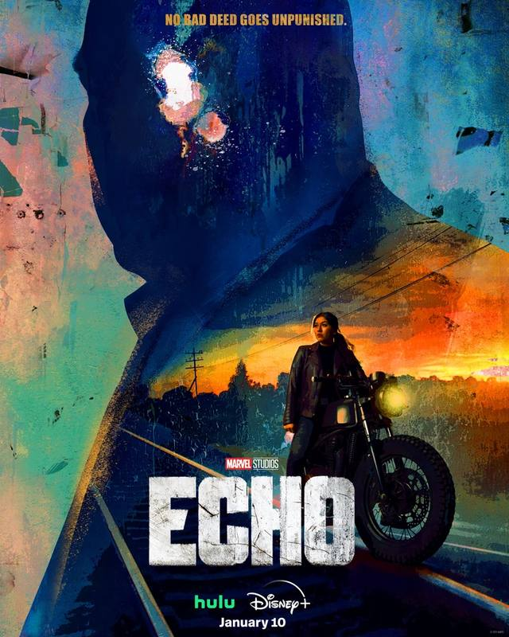
Echo arrived all at once in January 2024, the first Marvel Spotlight series, set after Hawkeye. Maya Lopez goes home, and Wilson Fisk comes with his crown still on his head. The story turns on her Choctaw ancestors and a power older than any TVA file. Nathan's read: a king of a city who will not leave the board, and a hero whose strength comes from her people rather than from a variant war. Kang is not in Oklahoma.

The film opened on July 26, 2024. Wade Wilson is dragged into the TVA. Paradox, a rogue agent, means to delete Wade's timeline with a Time Ripper because its anchor being is already dead. The villain in the room is Cassandra Nova, out in the Void, and the rescue is Logan, with faces from the old Fox films beside them: Blade, Elektra, Johnny Storm. Kang does not appear. Nathan's read: the film keeps the multiverse machinery and throws away the Kang face. A timeline dying because its anchor died is a universe collapsing, which is incursion logic, and the movie opened the same month Comic-Con put Doctor Doom on the stage.

The series premiered on September 18, 2024. Agatha Harkness, stripped of her power at the end of WandaVision, walks the Witches' Road with a coven. The boy called Teen is Billy Maximoff, Wanda's son, looking for his brother. Rio Vidal is Death. The Road itself turns out to be Billy's spell. Nathan's read: a witch's son writes a road into being. That is Hex logic again, reality edited by a child who was not supposed to be possible, and it carries Wanda's story forward with no Kang in the credits. The saga, he says, kept practicing authorship.

The film opened on February 14, 2025, with Anthony Mackie leading as Sam Wilson. Harrison Ford plays President Thaddeus Ross, the role William Hurt played until his death in 2022, and Ross becomes the Red Hulk. Tim Blake Nelson returns as Samuel Sterns, the Leader, a mind left waiting since The Incredible Hulk in 2008. The adamantium the countries are circling is tied to the Celestial body left in the ocean in Eternals. Nathan's read: a brilliant, damaged man playing a head of state is a brain in charge of a country, which is Doom's silhouette, and the metal in the plot is debris from a Celestial, not from Kang.

The film opened on May 2, 2025. Yelena Belova, Bucky Barnes, Red Guardian, Ghost, and John Walker get shoved into Valentina's mission, and the man at the center is Bob, the Sentry and also the Void. The Void drags people into rooms made of the worst thing they have done. Taskmaster does not survive the opening. The asterisk resolves: this crew is introduced as the New Avengers. A post-credits scene, months later, has them watching an extra-dimensional ship arrive with a 4 on the hull. Nathan's read: the Void overwrites a few blocks of a city, a pocket incursion of shame, and the 4 in the sky is the family Doom has spent decades of comics trying to outdo. Kang is not in the credits.
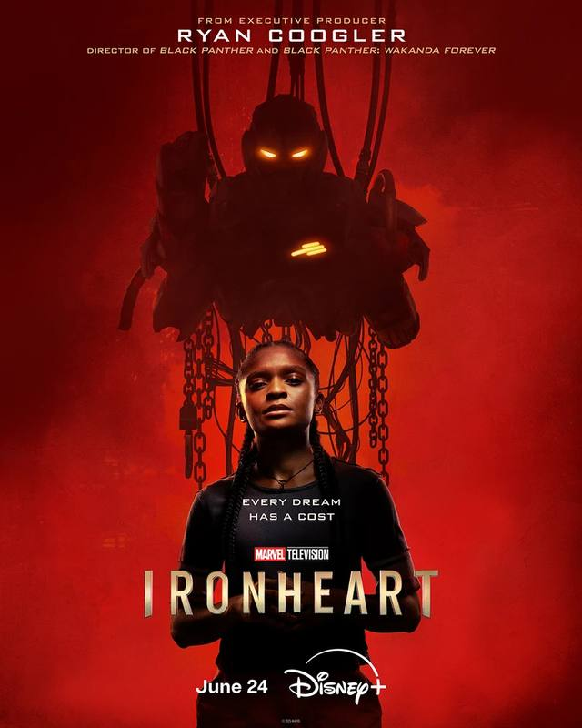
The series premiered on June 24, 2025. Riri Williams, last seen building in Wakanda Forever, is in Chicago making suits and falls in with Parker Robbins, the Hood, whose cloak is magic rather than a gadget. The finale reveals that Mephisto, played by Sacha Baron Cohen, dealt Robbins that cloak, and he offers Riri a bargain of her own after she loses the A.I. she modeled on her friend Natalie. She takes the deal. Nathan's read: a young genius, a machine, and a smile from something that wants a signature. He is not saying the show is secretly a Doom episode. He is saying Doom's story has always been brilliance, a machine, and a bargain, and this saga just laid those three pieces on the table. The devil in the room is Mephisto, not Kang.

The film opened on July 25, 2025. Pedro Pascal, Vanessa Kirby, Joseph Quinn, and Ebon Moss-Bachrach play Reed, Sue, Johnny, and Ben on Earth-828, a bright retro-future that is not the main MCU Earth. Julia Garner's Silver Surfer arrives to herald Galactus, who will spare that world if Reed and Sue hand over their son, Franklin. They refuse, and they beat a devourer of planets. Nathan's read: another Earth, a Reed Richards, and a threat that eats worlds, years after John Krasinski's Reed died on Earth-838 in Multiverse of Madness. The family Doom has always measured himself against finally has a film, and it does not take place on Kang's timeline.
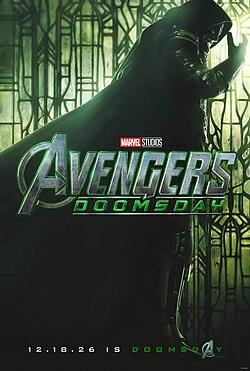
Avengers: Doomsday is scheduled for December 18, 2026. Avengers: Secret Wars is scheduled for December 17, 2027. The Russo brothers are directing. Robert Downey Jr. was announced in July 2024 as Victor von Doom, and the film that had been announced as The Kang Dynasty was retitled. Nathan's closing argument is that the pivot is public, and he does not think it was only a panic. From the Hex, to the incursion Clea names out loud, to Loki's throne at the end of time, to a Fantastic Four on another Earth, the saga kept building worlds that touch, break, and answer to one will. Kang had a movie. Doom, in Nathan's telling, had the plan.
Come argue it with him. Monday, November 16, 2026, 9:00 PM Eastern, on the live stream. The novena is still here in the morning.
Tonight's live stream · Mon Nov 16, 9 PM ET: https://www.youtube.com/watch?v=c6QBwKilMdA Join our Pio's Lost Sheep Discord Server: https://discord.gg/HqXPUEd5JQ Tithe Your Shekels: https://ko-fi.com/pioslostsheep Next live: https://www.youtube.com/channel/UCSadxDY_Q3o_ELwXacDTP6A/live